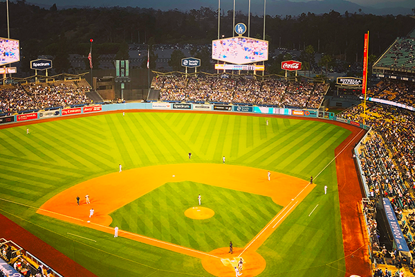
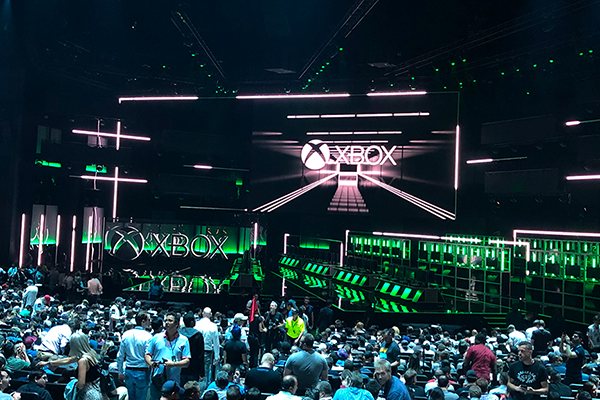

E3 Expo 2018 Los Angeles USA ▮▪
It’s the year 2018, and I find out that this year I’ll be going to the biggest gaming expo — E3 in Los Angeles. For people who follow the gaming world, it was the most traditional and above all the biggest event in the gaming industry. Every year, I watched from home to see what new announcements were made and what was being prepared for the future. Being there in person was a huge dream of mine. That dream was about to come true — I was heading to the USA for the first time as a marketer for a gaming retail company. The flight was long, and with my height… well, it wasn’t exactly comfortable, but I couldn’t wait.
We landed at Los Angeles Airport, went through security, and there it was — we were in America! At first, I couldn’t believe it. We arrived a few days early, so we had plenty of time to explore lots of beautiful places.
We went to Hollywood to see the famous Walk of Fame and walked around the downtown area, where the EA Play event was being held, if I remember correctly. We couldn’t miss it and there, I took a photo with Ben Irving, who was the lead producer of the game Anthem. Expectations for the game were sky-high, and their booth reflected that. Unfortunately, the game didn’t turn out well, but still incredible memories! We got to try many upcoming EA games and enjoyed yet another unforgettable experience.
After that, we went to an LA Dodgers baseball game and later visited an LA Galaxy match where Zlatan Ibrahimović was playing at the time. I didn’t hesitate and bought a jersey as a souvenir. Before the match, we listened to the American national anthem, followed by a fireworks show. Yet another unforgettable experience.
Next came trips to places like Malibu Beach, Santa Monica, and Venice Beach spots every GTA fan definitely knows. After a few more trips, it was finally time to move on to the grand event E3.
Here we go! E3 begins! Sitting inside the Microsoft Theater and seeing the Xbox presentation live was an incredible experience. I’ve been a PlayStation fan since I was a kid, but I had to admit this was absolutely spectacular! Trailer after trailer, and the energy in the entire hall was unreal. After that, we moved straight to the main convention center, picked up our badges, and we were ready to go! The atmosphere there was absolutely perfect.
E3 was open only to journalists, influencers, and people actively working in the gaming industry. The event was not open to the general public.

Looking back, I realize I actually experienced the last year PlayStation was present at this event. We’ll talk about E3 2019 later, but by then, PlayStation was no longer there. Their presentation that year was incredible showcasing upcoming titles like The Last of Us Part II, Ghost of Tsushima, Death Stranding, and more. A perfect ending to a great era at this expo. We visited countless booths and tried out so many games. It’s also worth mentioning Nintendo’s booth, which was celebrating huge success with its Nintendo Switch console.
It was a wonderful week full of unforgettable experiences, and I believe the selected photos will capture that feeling too. I’m truly thankful for this opportunity, which allowed me to fulfill my childhood dream.
Until next time…
Štefan
◀ Back to blog